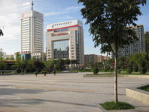

Weinan
Weinan (Chinese: 渭南; pinyin: Wèinán) is a prefecture-level city in the east of Shaanxi province, China. The city lies about 60 km (37 mi) east of the provincial capital Xi'an.
Weinan 渭南市 | |
|---|---|
|  | |
.png) Location of Weinan City jurisdiction in Shaanxi | |
| Country | People's Republic of China |
| Province | Shaanxi |
| Settled | 668 BC |
| Divisions County-level: Township-level: | 2 district 2 county-level cities 7 counties 143 towns and villages |
| Government | |
| • CPC Ctte Secretary | Li Mingyuan |
| • Mayor | Li Yi |
| Area | |
| • Land | 13,134 km2 (5,071 sq mi) |
| • Urban (2018)[1] | 78 km2 (30 sq mi) |
| Population (2010) | |
| • Prefecture-level city | 5,520,772 |
| • Urban (2018)[1] | 660,000 |
| • Urban density | 8,500/km2 (22,000/sq mi) |
| Demonym(s) | Guanzhong dialect |
| Time zone | UTC+8 (China Standard) |
| Postal code | 714000 |
| Area code(s) | 0913 |
| ISO 3166 code | CN-SN-05 |
| GDP | 2011 |
| - Total | CNY1,119.0 billion (USD177.6 billion) |
| - Per capita | CNY19,424 (USD3,007) |
| Licence plate prefixes | 陕E |
| Website | (in Chinese) www.weinan.gov.cn (in English) en.weinan.gov.cn |
EtymologyEdit
The name "Weinan" (渭南) describes the location of the city as "the south bank of the Wei River", although despite the name, the majority of the city area lies north of the Wei River.
HistoryEdit

As a significant area between the ancient Chinese capital Xi'an and Luoyang, Weinan has a long history.
AncientEdit

The ancient Dali Man lived in the modern area of Weinan. The Xiagui county was settled in the year of 668 BC by the state of Qin. Weinan got its name in the year of 360 by the Former Qin regime. In the Tang Dynasty, 10 emperors were buried in Weinan after their death. On the morning of 23 January 1556, the deadliest earthquake on record with its epicenter in Huaxian killed approximately 830,000 people, destroying an 840 kilometre-wide (520 mi) area.[2]
ModernEdit
The Weinan prefecture-level city was established in 1995, in replacement of the Weinan prefecture. Due to the construction of the Sanmenxia Dam, the economy of the city was restricted to agricultural sections and therefore the development level of the city is much lower than other cities in the province. The city developed rapidly after economic reform in China. The east part of Guanzhong Plain now belongs to the city, making Weinan the second most populated city in the Shaanxi province, after the capital Xi'an.
AdministrationEdit
The municipal executive, legislature and judiciary are in Linwei District, together with the CPC and Public Security bureaux.
| Administrative divisions of Weinan City | ||||||||||
|---|---|---|---|---|---|---|---|---|---|---|
| Division code[3] | English name | Chinese name | Pinyin | Area （km） |
Seat | Postal code | Subdivisions[4] | |||
| Subdistricts | Towns | Residential communities | Villages | |||||||
| 610500 | Weinan City | 渭南市 | Wèinán Shì | 13030.56 | Linwei District | 714000 | 12 | 130 | 215 | 3218 |
| 610502 | Linwei District | 临渭区 | Línwèi Qū | 1263.76 | Duqiao Subdistrict (杜桥街道) | 714000 | 8 | 16 | 56 | 514 |
| 610503 | Huazhou District | 华州区 | Huàzhōu Qū | 1132.46 | Huazhou Subdistrict (华州街道) | 714100 | 1 | 9 | 15 | 242 |
| 610522 | Tongguan County | 潼关县 | Tóngguān Xiàn | 427.35 | Chengguan Subdistrict (城关街道) | 714300 | 1 | 4 | 15 | 78 |
| 610523 | Dali County | 大荔县 | Dàlì Xiàn | 1690.60 | Chengguan Subdistrict (城关街道) | 715100 | 1 | 15 | 26 | 400 |
| 610524 | Heyang County | 合阳县 | Héyáng Xiàn | 1317.15 | Chengguan Subdistrict (城关街道) | 715300 | 1 | 11 | 19 | 353 |
| 610525 | Chengcheng County | 澄城县 | Chéngchéng Xiàn | 1121.64 | Chengguan Subdistrict (城关街道) | 715200 | 1 | 9 | 14 | 266 |
| 610526 | Pucheng County | 蒲城县 | Púchéng Xiàn | 1579.81 | Chengguan Subdistrict (城关街道) | 715500 | 1 | 15 | 8 | 373 |
| 610527 | Baishui County | 白水县 | Báishuǐ Xiàn | 983.95 | Chengguan Subdistrict (城关街道) | 715600 | 1 | 7 | 11 | 194 |
| 610528 | Fuping County | 富平县 | Fùpíng Xiàn | 1245.99 | Chengguan Subdistrict (城关街道) | 711700 | 1 | 14 | 9 | 337 |
| 610581 | Hancheng City | 韩城市 | Hánchéng Shì | 1591.60 | Xincheng Subdistrict (新城街道) | 715400 | 2 | 10 | 26 | 275 |
| 610582 | Huayin City | 华阴市 | Huàyīn Shì | 676.26 | Taihua Road Subdistrict (太华路街道) | 714200 | 2 | 4 | 16 | 186 |
| Note：The statistic of Linwei District inclouds the 2 subdistricts of Weinan High-Tech Industrial Development Zone. | ||||||||||

{kind=link}
DemographicsEdit
| Division | Permanent residents[5]（November 2010） | Hukou residents[6] (by end of 2010) | ||
|---|---|---|---|---|
| Total | Percentage | Population density (persons/km2) | ||
| Weinan City | 5286077 | 100 | 405.67 | 5600599 |
| Linwei District | 877142 | 16.59 | 694.07 | 976822 |
| Huazhou District | 322148 | 6.09 | 284.47 | 347913 |
| Tongguan County | 155463 | 2.94 | 363.79 | 165860 |
| Dali County | 693392 | 13.12 | 410.15 | 718340 |
| Heyang County | 436441 | 8.26 | 331.35 | 451983 |
| Chengcheng County | 386150 | 7.31 | 344.27 | 404663 |
| Pucheng County | 743000 | 14.06 | 470.31 | 782571 |
| Baishui County | 279679 | 5.29 | 284.24 | 294823 |
| Fuping County | 743385 | 14.06 | 596.62 | 791246 |
| Hancheng City | 391164 | 7.40 | 245.77 | 399696 |
| Huayin City | 258113 | 4.88 | 381.68 | 266682 |
| Note:The permanent residents of Linwei district include the 49209 permanent residents of Weinan High-Tech Industrial Development Zone. | ||||
According to the sixth National Population Census of the People's Republic of China, there are 5,286,077 people resident in Weinan.[7] Compared to the previous census data from 2000, the population has decreased by 108,729 persons. Among the residents, 50.75% are males and 49.25% are females. The number of male and female residents are separately 2,682,710 and 2,603,367. The sex ratio is 103.05.[7]
TransportationEdit
Due to its location on the plain, Weinan is well connected, especially to the provincial capital Xi'an.
Public TransportationEdit
As of March 2015, there are 20 bus routes operated in the urban area of the city. Apart from line 1 and 2 with air-conditioning carrying a fare of 2 RMB, all other bus route fares are 1 RMB. There are also 1000 taxis in the urban city, The base fare is currently ¥5 which covers the first 2.5 km. Additional kilometers cost ¥1.4 or ¥1.5 each.
RoadsEdit
China National Highway 108 and China National Highway 310 pass through the city. Major expressways in the city are G5 Beijing–Kunming Expressway, G30 Lianyungang–Khorgas Expressway and G65E Yulin–Lantian Expressway. 5 bridges connect north and south part of the city on the Wei River, there are also 3 road bridges connecting the city to the neighboring Shanxi Province on the Yellow River.
RailEdit

The urban city of Weinan owns 4 railway stations. Weinan Railway Station was open in 1934. Located on the important Longhai Railway, almost all Chinese major cities can be reached through the train. Weinan North Railway Station is a station for high-speed rail, it is located on the Xuzhou–Lanzhou High-Speed Railway and Datong–Xi'an Passenger Railway. The station is part of the Weinan Weihe Grand Bridge, one of the longest bridges in the world. Weinan South Railway Station and Weinan West Railway Station are on the Nanjing–Xi'an Railway, they are both only served by the slowest trains. In the suburban area, there are also 2 stations for high-speed railway:Huashan North Railway Station and Dali Railway Station, there are as well also stations for conventional rail like the Huashan Railway Station and Hancheng Railway Station.
AirEdit
There is no commercial passagenger airport in Weinan, the nearest airport is Xi'an Xianyang International Airport. A shuttle bus connects the Weinan Railway Station with the airport frequently throughout the day. A smaller airport is under construction in Huazhou District to serve the tourism of Hua Mountain.
TourismEdit
- Mount Hua, one of China's Five Great Mountains, which has a long history of religious significance.
- Xiyue Temple, Temple for the God of Mount Hua.
- Tong Pass, an important strategic pass with historical significance.
EducationEdit
SchoolsEdit
As of end in 2012, there are 2859 schools of all kinds; 75 high schools, 70 vocational schools, 310 junior high schools, 1266 primary schools, 1002 kindergartens and 7 special education schools.
UniversitiesEdit
Weinan has 3 higher educational institutions. The Weinan Normal University is a comprehensive multi-discipline research university. Weinan has 2 other tertiary institutions, they are Shaanxi Railway Institute and Weinan Vocational and Technical College.
Notable peopleEdit
- Sima Qian, historian of the Han Dynasty, widely considered the father of Chinese historiography for his work, the Records of the Grand Historian.
- Emperor Wen of Sui, founder of the Sui Dynasty.
- Guo Ziyi, general during the Tang Dynasty, ended the An Shi Rebellion.
- Bai Juyi, renowned Chinese poet and Tang Dynasty government official.
- Kou Zhun, a much-praised official of Song Dynasty.
- Yang Hucheng, general who conducted the famous Xi'an Incident in 1936.
- Xi Zhongxun, communist revolutionary and a political leader of PRC, father of Xi Jinping.
International relationsEdit
Weinan's twin towns and sister cities are:
|
External linksEdit
- Weinan Government Website (in English and Chinese)
- Website of Weinan Normal University Website (in English, Chinese, and Russian)
ReferencesEdit
- ^ a b Cox, W (2018). Demographia World Urban Areas. 14th Annual Edition (PDF). St. Louis: Demographia. p. 22.
- ^ "China's History of Massive Earthquakes". 12 May 2008. Archived from the original on 14 May 2008. Retrieved 16 June 2008.
- ^ 国家统计局统计用区划代码 (in Chinese). National Bureau of Statistics of China. Retrieved 2015-06-26.
- ^ Ministry of Civil Affairs of the People's Republic of China. 《中国民政统计年鉴2014》 (in Chinese). China Statistics Print (中国统计出版社). ISBN 978-7-5037-7130-9.
- ^ National Bureau of Statistics of China. 《中国2010年人口普查分县资料》 (in Chinese). China Statistics Print (中国统计出版社). ISBN 978-7-5037-6659-6.
- ^ Ministry of Public Security of China. 《中华人民共和国全国分县市人口统计资料2010》 (in Chinese). 群众出版社. ISBN 978-7-5014-4917-0.
- ^ a b "渭南市2010年第六次全国人口普查主要数据公报 (Weinan population)". Bureau of Health and Family Planning of Weinan City, in Chinese. Retrieved 2015-06-26.
- ^ "我市与俄罗斯阿穆尔共青城结为友好城市". Retrieved 2016-05-14.